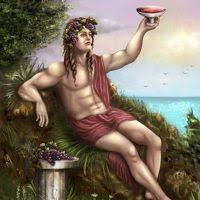

 Вакх или Бахус, называемый иногда греками Дионисом, а римлянами Либером, был первоначально фракийский или фригийский бог, культ которого был греками перенят очень рано. Вследствие распространенного в Греции виноделия этот культ укоренился прочно, особенно между сельским населением. По предположению некоторых исследователей, Вакх - бог греческий, в мифы о котором и в обряды почитания вкрались с течением времени чужеземные элементы, преимущественно фригийской и фракийской религии.
Это бог небесной и земной влаги и обусловливаемой ею и солнечным теплом живой силы природы, а также - бог вина и его возбуждающего действия на человека. Большинство народных празднеств, посвященных ему, непосредственно связаны с занятиями по виноделию и виноградарству. Так напр., потребление нового, свежего вина, после окончания сбора винограда и его выжимки, сопровождалось в Аттике особым празднеством - Дионисиями; начало разливки уже выбродившего вина имело в Афинах свое празднество - Антестерия, праздник цветов. Все мифы и рассказы о том, как Вакх посещал Энея в Этолии и Икара в Аттике, подарил им винную лозу и научил виноделию, странствовал, в сопровождении сатиров, силенов, менад и вакханок, по всем странам, занимающимся виноделием - все это вытекает из значения Вакха, как бога вина и веселья. Сказания эти приобрели особое распространение после завоевания всего Востока Александром Македонским, когда культ Вакха был перенесен даже в Индию.
Дионис был сын бога небес и грозовой тучи или, иначе, сын богини земли, оплодотворенной небесным богом под видом ливня. Это поэтически переделанное сказание делает его, затем, сыном дочери фиванского царя, Семелы, и Зевса, при чем рассказывается следующее: Семела, по совету ревнивой Геры, пожелала увидеть Зевса во всем его царственном и божественном блеске, но когда тот явился окруженный молниями и громом, она упала замертво. Зевс вынул тогда из чрева матери недоношенное еще дитя, Диониса, заключил его в своем бедре, и родившееся вторично после некоторого времени дитя отдал на воспитание нимфам. По другому сказанию, Вакх считается сыном Зевса и Деметры или Персефоны, в услужении у которой он является в Элевзисе (в мистериях). Орфийцы называют Диониса Загреем и рассказывают, что он, умерщвленный и разорванный на части титанами, ожил снова после того, как Зевс проглотил его сердце или, по другой версии, отдал его Семеле. Это сказание о страдании и смерти бога, а затем о его воскресении, связано непосредственно с расцветом и увяданием природы во время годичного цикла времени. Ночные празднества в честь Вакха совершались во многих местах Греции.
На Кифероне, по преданию, фиванский король Пентей, в наказание за преследование бога, был растерзан женщинами, впавшими в вакхическое неистовство, и между прочим собственной матерью, принявшей его за какое-то животное. Это и подобные ему сказания объясняются тем, что действительно некоторые женщины, в исступлении и экстазе (менады неистовствующие), разрывали в жертву богу живых животных, преимущественно молодых козлят, а в некоторых местностях в старое время приносились Дионису даже человеческие жертвы, как на это указывает отчасти и прозвище бога - Оместес (поедающий сырое мясо). Чуждое греческой натуре, неистовое чествование Вакха подверглось с Греции полному преобразованию. Оно вскоре получило художественный оттенок и слилось отчасти с культом Аполлона, а фанатические фригийские обряды, в которых немаловажную роль играл фаллос, воспеваемый как символ производительной силы природы, исчезли, приняв постепенно форму комедий. Другая форма драматической поэзии, трагедия, образовалась из так наз. дифирамбов - хоровых песен, в которых мужчины, переодетые сатирами, воспевали деяния и страдания бога. В Наксосе, где, по преданию, Дионис встретил покинутую Тезеем Ариадну и сделал ее своей женой, празднование Вакха состояло из двух частей: в первой оплакивалось плачевное положение забытой Ариадны, а вторая выражала шумную радость по поводу счастливой развязки.